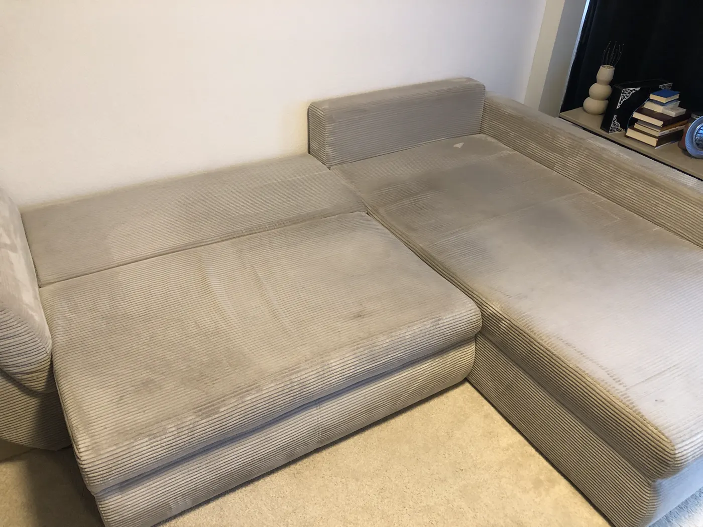
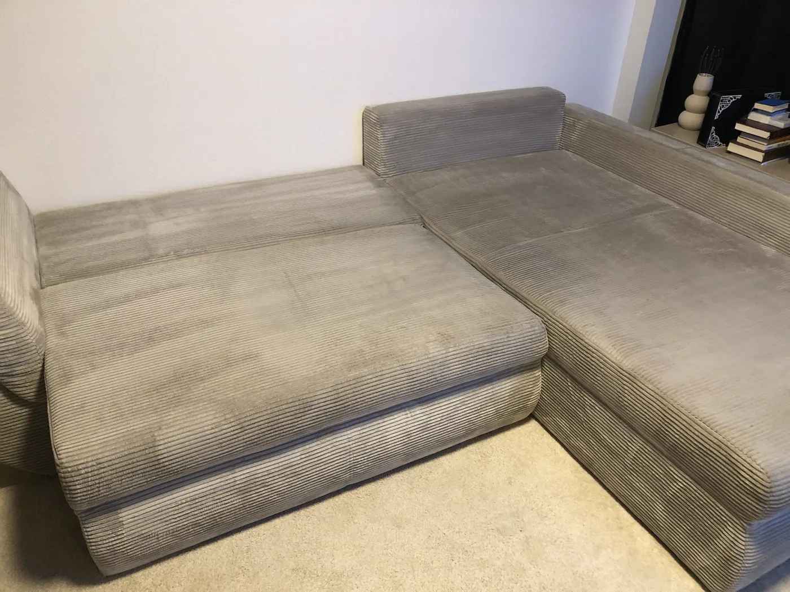

Was kostet Polsterreinigung?
Festpreise für Wiesbaden, Mainz und Frankfurt, Anfahrt inklusive.
Stand: November 2026, Petro Teperik
Eine Polsterreinigung vor Ort kostet bei Master Clean Pro für ein 2-Sitzer-Sofa ab 89 €, für ein 3-Sitzer-Sofa ab 119 € und für ein Ecksofa ab 159 €. Ein Sessel kostet ab 39 €, ein Polsterstuhl ab 25 €, ein Autositz ab 35 €. Alle Preise sind Festpreise inklusive Anfahrt in Wiesbaden, Mainz, Frankfurt und Umgebung; der Mindestauftrag liegt bei 79 € pro Termin.
Preisliste Polsterreinigung
Startpreise für normale Verschmutzung. Den Festpreis für Ihr Möbelstück nenne ich nach Ihren Fotos.
Als Kleinunternehmer nach § 19 UStG berechne ich keine Umsatzsteuer: Die genannten Preise sind Endpreise.
Wovon hängt der Preis ab?
Größe
Anzahl der Sitzplätze, Ecksofa oder Schlaffunktion, lose Kissen.
Material
Stoff und Mikrofaser werden anders behandelt als Leder. Ledermöbel bewerte ich immer nach Fotos.
Verschmutzung
Alltagsschmutz ist schneller entfernt als alte Flecken, Tierhaare oder Gerüche.
Entfernung
In Wiesbaden, Mainz, Frankfurt und Umgebung ist die Anfahrt inklusive; nur weiter entfernte Orte sprechen wir vorab ab.
Rechenbeispiele
Vorher und nachher
Echter Auftrag: Ecksofa aus Cord. Ziehen Sie den Regler zur Seite.


Was ist im Preis enthalten?
Ich komme zu Ihnen nach Hause oder zum Fahrzeug und reinige direkt vor Ort. Die Polster werden im Sprühextraktionsverfahren mit einem professionellen Gerät (Santoemma Sabrina SW15) gründlich ausgespült, sodass Schmutz und Reinigungsrückstände entfernt werden.
Für ein 3-Sitzer-Sofa planen Sie etwa 2 bis 3 Stunden ein; danach trocknet das Polster in der Regel mehrere Stunden. Bezahlt wird bar, per Überweisung oder mit PayPal.
Häufige Fragen
Ab 119 €, ein 2-Sitzer ab 89 € und ein Ecksofa ab 159 €, jeweils inklusive Anfahrt. Den Festpreis nenne ich nach Fotos per WhatsApp.
Ja, 79 € pro Termin. Ein einzelner Sessel oder Stuhl lässt sich gut mit einem weiteren Möbelstück oder Autositz kombinieren, zum Beispiel vier Polsterstühle ab 100 €.
Nichts extra: In Wiesbaden, Mainz, Frankfurt am Main und Umgebung ist die Anfahrt im Preis enthalten. Nur für Orte weiter außerhalb sprechen wir die Anfahrt vorab ab.
Für ein 3-Sitzer-Sofa sollten Sie etwa 2 bis 3 Stunden einplanen. Danach braucht das Polster in der Regel mehrere Stunden zum Trocknen.
Nein. Der Preis, den ich nach Ihren Fotos nenne, ist ein Festpreis. Vor Ort kommt nichts dazu.
Meist in 1 bis 3 Tagen. Schicken Sie die Fotos, dann schlage ich Ihnen gleich einen Termin vor.
Bar, per Überweisung oder mit PayPal.
Dann sagen Sie es mir, und ich reinige die Stelle kostenlos nach. Ihre gesetzlichen Rechte bleiben davon unberührt.
Ja. Ich spüle das Polster mit dem Extraktionsgerät gründlich aus, sodass Schmutz und Rückstände entfernt werden. Nach dem vollständigen Trocknen kann das Möbelstück wieder sicher genutzt werden.
Ihren Festpreis per WhatsApp
Sie bekommen einen Festpreis und einen Termin, meist in 1 bis 3 Tagen. Am schnellsten geht es per WhatsApp.
Mo bis Fr 9 bis 20 Uhr, Sa 9 bis 15 Uhr